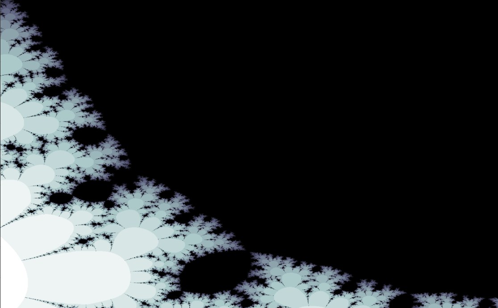
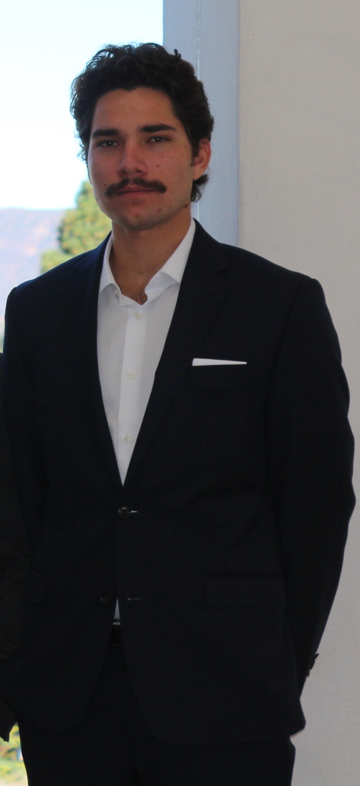

Photonics Research · Art · Personal Projects
Benjamin Kellin Gutierrez


Two planes

About

Undergraduate degree in Electrical Engineering with a minor in Physics from San Diego State University.
My interests include education, mathematics, optics, and power electronics. The purpose of this website is to provide a medium through which I can document my work.